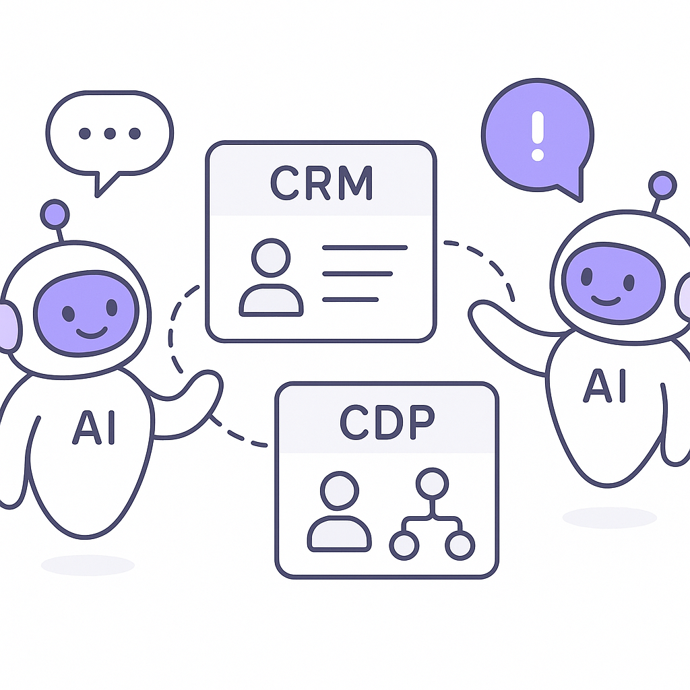
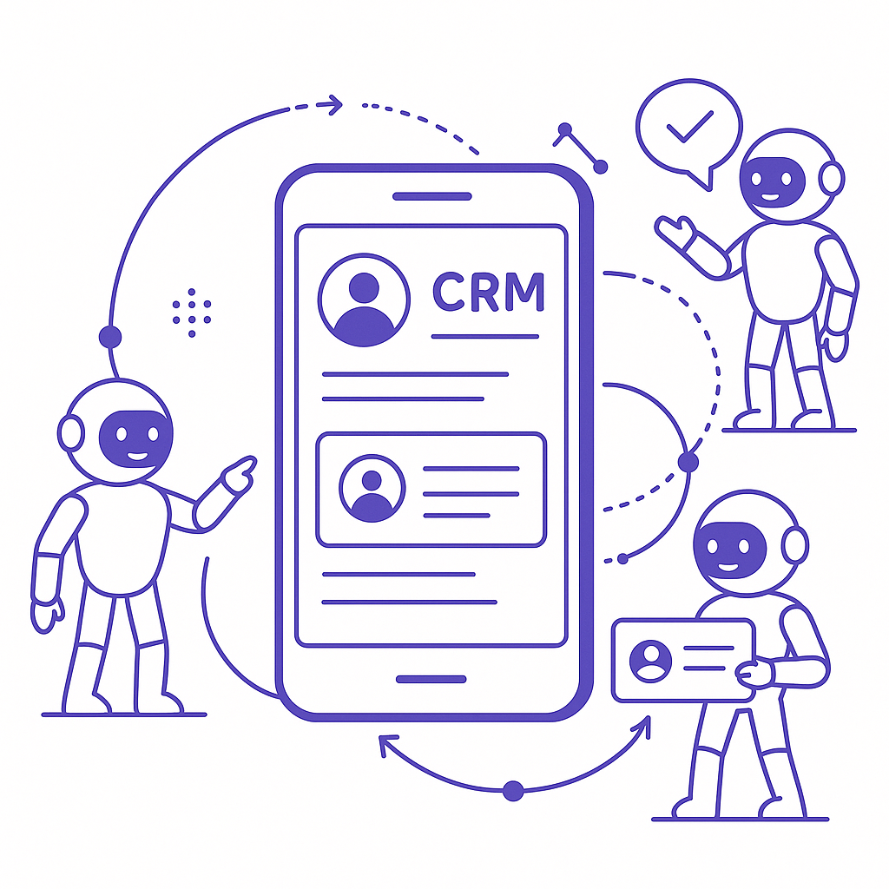
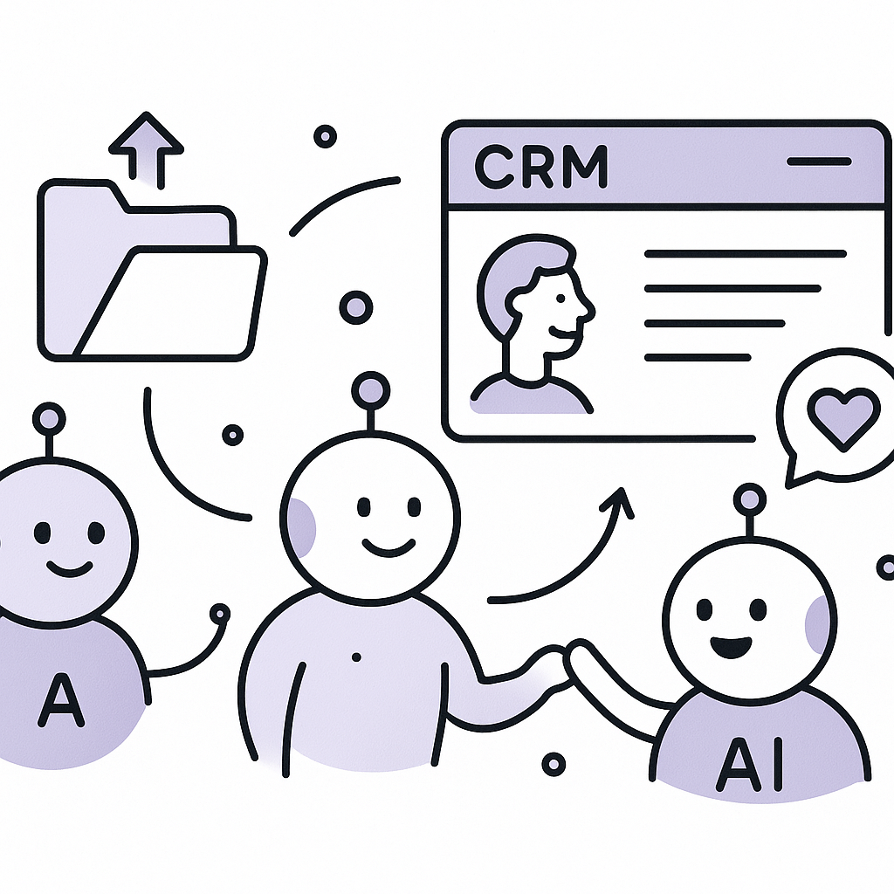
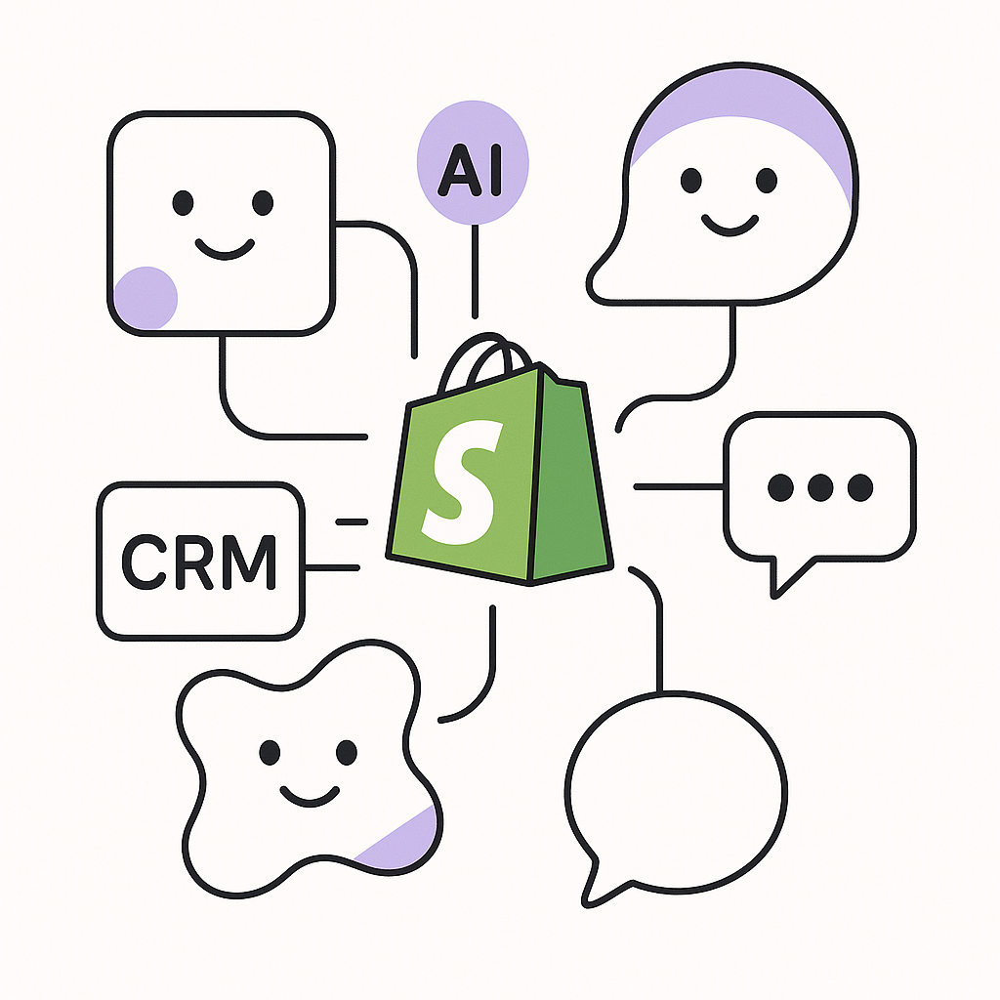
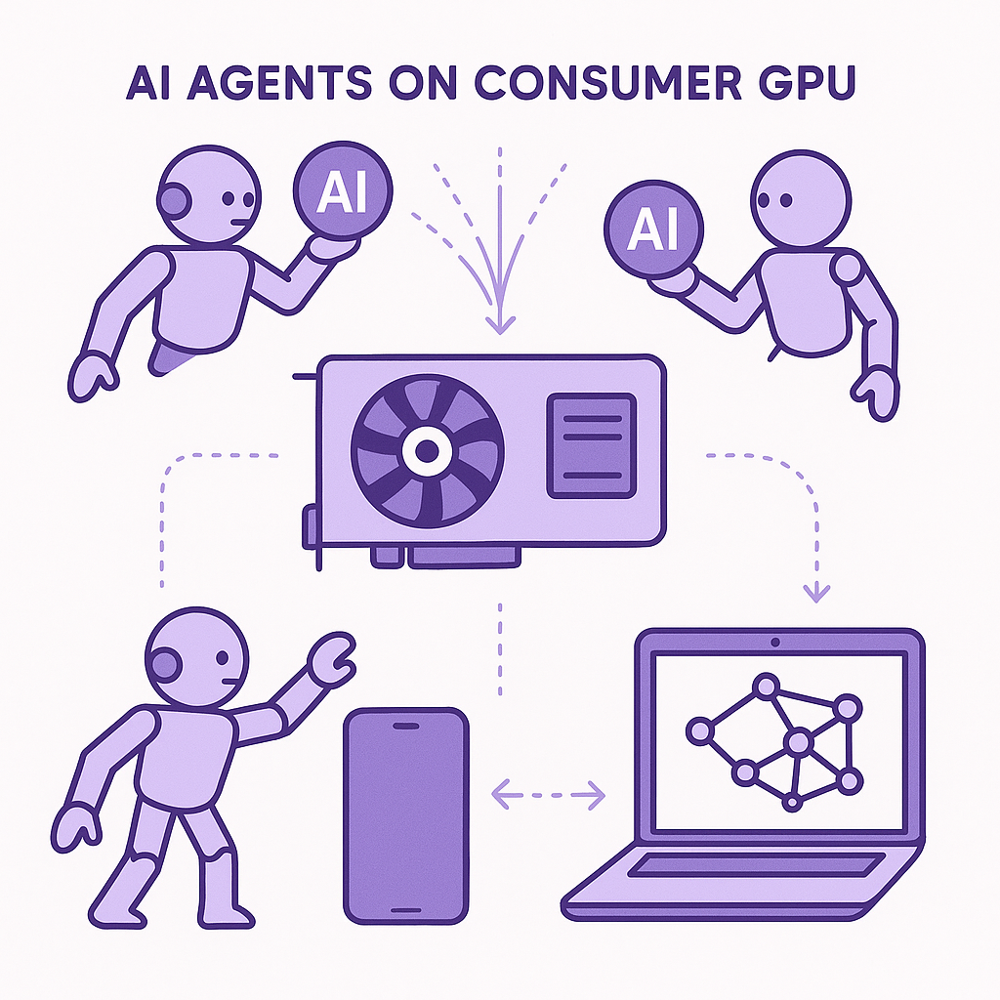

Publishing Recommendation
reviseSeveral drafts lean too heavily on self-promotion and lack depth in exploring the broader implications of the trends. They need to focus more on providing practical insights rather than promoting Purands AI's offerings.
Today's drafts need refinement to better align with Purands AI's brand voice. The focus should shift from promotional content to delivering insightful, practical analysis of the trends. The drafted posts should prioritize providing value to the reader, ensuring they leave with actionable insights rather than feeling they've been marketed to.
LinkedIn Posts (10)
1. Salesforce rolls out new Slackbot AI agent ★ Purands solution · high priority
CTA: How does your team currently use AI in customer engagement?

⬇ Download image{kind=link}
Image prompt · flat-vector
Caption: AI agents transforming customer engagement.
Alternative hooks
- Salesforce's new Slackbot AI agent is reshaping workplace communication.
- AI agents are transforming CRM strategies - and Purands is at the forefront.
- Integrating AI into communication tools is more than a trend - it's a necessity.
Research behind this post (sources, summaries & confidence)
Salesforce rolls out new Slackbot AI agent conf 0.85 · Practical AI agents
Salesforce's new Slackbot AI agent emphasizes the growing trend of integrating AI into workplace communication tools, which is directly relevant to CRM and customer engagement strategies. This highlights opportunities for AI-driven retention marketing and lifecycle messaging.
Sources & what I took from each
- Salesforce introduces Slackbot AI agent: VentureBeat reports on Salesforce's launch of a new AI agent for Slack, highlighting its integration into workplace communication. ↗ read source
Recent news
- Salesforce's Slackbot launch is part of a broader strategy to enhance AI capabilities in workplace tools.
Original trend links
Risks / caveats
- AI integration in workplace tools may raise privacy and security concerns.
- Competition with other tech giants could affect market share.
2. Mesh, Automattic’s CRM for everyone, comes to Android ★ Purands solution · high priority
CTA: How would you integrate AI into your mobile-first CRM strategy?

⬇ Download image{kind=link}
Image prompt · flat-vector
Caption: Mobile CRM strategies with AI enhancement.
Alternative hooks
- Mesh CRM's Android launch is a big deal for mobile-first markets.
- Mobile-first CRM strategies just got a boost with Mesh CRM on Android.
- APAC's mobile-first markets stand to gain from Mesh CRM's Android expansion.
Research behind this post (sources, summaries & confidence)
Mesh, Automattic’s CRM for everyone, comes to Android conf 0.85 · CRM strategy
The expansion of Automattic's CRM tool to Android broadens its accessibility, offering new opportunities for mobile-first CRM strategies in retention marketing, particularly relevant for APAC's mobile-first markets.
Sources & what I took from each
- Mesh CRM expands to Android: TechCrunch reports on the launch of Automattic's CRM tool on Android, broadening its accessibility. ↗ read source
Recent news
- The expansion to Android is expected to increase Mesh's user base significantly.
Original trend links
Risks / caveats
- Android expansion might face competition from established mobile CRM apps.
- Platform-specific challenges in app development.
3. Anthropic's no-code AI agent for file management ★ Purands solution · high priority
CTA: How are you currently handling customer retention? Any AI strategies in play?

⬇ Download image{kind=link}
Image prompt · flat-vector
Caption: AI agents streamline operations without coding.
Alternative hooks
- Imagine managing your files without writing a single line of code.
- No-code AI agents are changing the game in productivity and beyond.
- What if AI could streamline your CRM operations effortlessly?
Research behind this post (sources, summaries & confidence)
Anthropic launches Cowork, a Claude Desktop agent that works in your files — no coding required conf 0.80 · Practical AI agents
Anthropic's new AI agent that simplifies file management without coding is a significant development for enhancing productivity tools. This could be leveraged in CRM and customer data platforms to streamline operations and improve customer service.
Sources & what I took from each
- Anthropic launches no-code AI agent for file management: VentureBeat covers the launch of Anthropic's new AI tool that enhances productivity through no-code automation. ↗ read source
Recent news
- Anthropic's launch of Cowork reflects a growing trend towards simplifying AI tools for broader use.
Original trend links
Risks / caveats
- No-code solutions may have limitations in customization.
- Security concerns with automated file management.
4. How AI is changing Instagram engagement without replacing the human touch ★ Purands solution · high priority
CTA: How do you see AI changing the way you engage with your customers?
{kind=link}
Image prompt · flat-vector
Caption: AI enhances Instagram engagement, maintaining human touch.
Alternative hooks
- Instagram's engagement is getting a boost from AI, but not at the cost of human touch.
- AI isn't replacing humans on Instagram; it's enhancing how we connect.
- The secret to better Instagram engagement? AI-driven personalization with a human touch.
Research behind this post (sources, summaries & confidence)
How AI is changing Instagram engagement without replacing the human touch conf 0.75 · AI in business
AI's role in altering Instagram engagement is noteworthy for retention marketing, emphasizing the balance between automation and human interaction. This reflects broader trends in AI-driven personalization and customer engagement that Purands AI could leverage.
Sources & what I took from each
- AI changes Instagram engagement: The article discusses how AI is being used to enhance engagement on Instagram while preserving human interaction. ↗ read source
Recent news
- The use of AI in social media platforms like Instagram is gaining attention for its potential to increase user engagement.
Original trend links
Risks / caveats
- Over-reliance on AI could reduce genuine interactions.
- Privacy concerns related to data used for AI-driven personalization.
5. Agentic orchestration: Enterprise AI organizations know how to govern agents but still can't meter what they cost ★ Purands solution · high priority
CTA: How do you measure the cost-effectiveness of AI in your operations?
Alternative hooks
- Enterprise AI cost management is like chasing shadows.
- AI governance is strong, but cost tracking? Not so much.
- Running AI without knowing the cost is like driving blindfolded.
Research behind this post (sources, summaries & confidence)
Agentic orchestration: Enterprise AI organizations know how to govern agents but still can't meter what they cost conf 0.70 · AI in business
The challenges in managing AI agent costs and operations highlight the complexities of AI deployment in enterprises, which is crucial for Purands AI's focus on practical AI applications in marketing operations.
Sources & what I took from each
- Enterprise AI organizations struggle with cost metering: VentureBeat discusses the ongoing challenges enterprises face in cost management of AI operations. ↗ read source
Recent news
- AI cost management remains a significant hurdle for enterprises seeking to scale AI operations efficiently.
Original trend links
Risks / caveats
- Inaccurate cost tracking could lead to budget overruns.
- Complexity in governance may slow AI adoption.
6. Shopify ecosystem: apps, Flow, checkout, customer accounts ★ Purands solution · high priority
CTA: How are you leveraging Shopify's ecosystem for customer retention?

⬇ Download image{kind=link}
Image prompt · flat-vector
Caption: Enhancing Shopify retention strategies with AI.
Alternative hooks
- Shopify is more than a sales channel, it's a strategic asset.
- Is your Shopify store leveraging its full potential for customer retention?
- E-commerce retention is evolving with Shopify's new innovations.
Research behind this post (sources, summaries & confidence)
Shopify ecosystem: apps, Flow, checkout, customer accounts conf 0.65 · Shopify ecosystem
Continued innovation in the Shopify ecosystem, including apps and customer account management, is critical for enhancing e-commerce retention strategies, directly aligning with Purands AI's focus on the platform.
Sources & what I took from each
- Innovation in the Shopify ecosystem: The GitHub repository outlines new developments in Shopify apps, which could enhance customer engagement and retention. ↗ read source
Recent news
- Shopify's continuous platform enhancements are aimed at improving merchant and customer experiences.
Original trend links
Risks / caveats
- Reliance on Shopify's ecosystem for business operations can pose risks if platform policies change.
- Competition with other e-commerce platforms could affect market dynamics.
7. Twitch streamers can now opt out from training Amazon’s AI
CTA: How do you see this balance between data privacy and AI development evolving?
Alternative hooks
- A subtle shift in the tech world could have profound effects on data privacy.
- Imagine you could stop your work from training an AI. Twitch streamers now can.
- In a move for data privacy, Twitch streamers can opt out of AI training.
Research behind this post (sources, summaries & confidence)
Twitch streamers can now opt out from training Amazon’s AI conf 0.90 · AI industry
The decision by Twitch to allow streamers to opt-out of AI training impacts data privacy and content creator rights. This discussion is relevant for retention marketing as it highlights the balance between data usage for AI and consumer rights, which is crucial for customer trust and engagement.
Sources & what I took from each
- Twitch streamers can opt-out from AI training: The Verge confirms that Twitch has implemented a feature allowing streamers to opt-out of AI training, addressing data privacy concerns. ↗ read source
Recent news
- This move by Twitch is part of a growing trend among tech companies to offer more control over data privacy to users.
Original trend links
Risks / caveats
- Opt-out options may limit the data available for improving AI models.
- Balancing user rights with AI development needs is complex.
8. OpenAI-backed Thrive Holdings raises $2B to bring AI to the enterprise
CTA: What challenges do you think enterprise AI will face in the coming years?
Alternative hooks
- When a company raises $2 billion, you pay attention.
- Enterprise AI is getting a $2 billion boost from Thrive Holdings.
- Thrive Holdings just raised $2 billion - but what's the real story here?
Research behind this post (sources, summaries & confidence)
OpenAI-backed Thrive Holdings raises $2B to bring AI to the enterprise conf 0.80 · AI startups
Thrive Holdings' significant funding round highlights the growing importance of AI in enterprise applications, which aligns with Purands AI's focus on practical AI agents for retention marketing. The investment from major players underscores the competitive landscape and potential for AI-driven business transformation.
Sources & what I took from each
- Thrive Holdings raised $2B: The article from TechCrunch confirms that Thrive Holdings, backed by OpenAI, raised $2 billion to focus on AI for enterprise applications. ↗ read source
- Thrive Holdings is backed by influential investors: OpenAI's backing is a significant endorsement, suggesting strong investor confidence. ↗ read source
Recent news
- Thrive Holdings' funding round has been covered by major tech news outlets, highlighting the significance of this investment in the AI landscape.
Original trend links
Risks / caveats
- High valuations in AI startups can lead to market bubbles.
- Enterprise AI applications may face integration challenges.
9. Meta Muse Glimmer brings local AI agents to consumer GPUs
CTA: What applications do you think will benefit most from this shift to local AI processing?

⬇ Download image{kind=link}
Image prompt · flat-vector
Caption: Decentralized AI on consumer GPUs.
Alternative hooks
- Remember when AI needed a server farm just to run a basic model?
- Meta just made AI personal with Muse Glimmer running on your GPU.
- AI's going local - and it could change everything about customer interactions.
Research behind this post (sources, summaries & confidence)
Meta Muse Glimmer brings local AI agents to consumer GPUs conf 0.80 · AI industry
Meta's release of local AI agents that run on consumer GPUs represents a significant shift towards decentralized AI processing. This could influence the development of AI tools for retention marketing, enabling more personalized and efficient customer interactions.
Sources & what I took from each
- Meta releases local AI agents for consumer GPUs: The article outlines Meta's launch of AI agents that can operate on consumer-grade GPUs, indicating a move towards decentralized AI. ↗ read source
Recent news
- Meta's initiative is part of a broader trend towards making AI more accessible and less reliant on centralized infrastructure.
Original trend links
Risks / caveats
- Decentralized AI processing could lead to security vulnerabilities.
- Compatibility issues with diverse consumer hardware.
10. Google tests AMIE for clinical video consultations
CTA: How do you see AI like AMIE impacting other service industries?
Alternative hooks
- Google's AI pilot could change how we think about video consultations.
- AI might not replace your doctor, but it could make them more efficient.
- Could AI like Google's AMIE redefine service delivery in healthcare?
Research behind this post (sources, summaries & confidence)
Google tests AMIE for clinical video consultations conf 0.80 · AI in business
Google's testing of AI for clinical video consultations highlights the potential for AI to transform service delivery in healthcare, which could reflect broader trends applicable to customer service in retention marketing.
Sources & what I took from each
- Google tests AI for clinical consultations: The article highlights Google's pilot program using AI for enhancing clinical video consultations. ↗ read source
Recent news
- Google's AI initiative in healthcare is part of a larger trend towards integrating AI in medical service delivery.
Original trend links
- https://www.artificialintelligence-news.com/news/google-tests-amie-for-clinical-video-consultations/
Risks / caveats
- AI in healthcare could face regulatory challenges.
- Ensuring data privacy and security in medical applications is critical.
Today's Trends
| # | Trend | Category | Why it matters |
|---|---|---|---|
| 1 | OpenAI-backed Thrive Holdings raises $2B to bring AI to the enterprise
source |
AI startups | Thrive Holdings' significant funding round highlights the growing importance of AI in enterprise applications, which aligns with Purands AI's focus on practical AI agents for retention marketing. The investment from major players underscores the competitive landscape and potential for AI-driven business transformation. |
| 2 | Alibaba tests new business model for Qwen open-source AI
source |
AI industry | Alibaba's move to introduce revenue-sharing for its open-source AI model Qwen could reshape the business models around AI deployment, particularly in APAC. This development is crucial for understanding the monetization strategies of AI platforms that may affect retention marketing technologies. |
| 3 | Twitch streamers can now opt out from training Amazon’s AI
source |
AI industry | The decision by Twitch to allow streamers to opt-out of AI training impacts data privacy and content creator rights. This discussion is relevant for retention marketing as it highlights the balance between data usage for AI and consumer rights, which is crucial for customer trust and engagement. |
| 4 | Salesforce rolls out new Slackbot AI agent
source |
Practical AI agents | Salesforce's new Slackbot AI agent emphasizes the growing trend of integrating AI into workplace communication tools, which is directly relevant to CRM and customer engagement strategies. This highlights opportunities for AI-driven retention marketing and lifecycle messaging. |
| 5 | How AI is changing Instagram engagement without replacing the human touch
source |
AI in business | AI's role in altering Instagram engagement is noteworthy for retention marketing, emphasizing the balance between automation and human interaction. This reflects broader trends in AI-driven personalization and customer engagement that Purands AI could leverage. |
| 6 | Meta Muse Glimmer brings local AI agents to consumer GPUs
source |
AI industry | Meta's release of local AI agents that run on consumer GPUs represents a significant shift towards decentralized AI processing. This could influence the development of AI tools for retention marketing, enabling more personalized and efficient customer interactions. |
| 7 | Agentic orchestration: Enterprise AI organizations know how to govern agents but still can't meter what they cost
source |
AI in business | The challenges in managing AI agent costs and operations highlight the complexities of AI deployment in enterprises, which is crucial for Purands AI's focus on practical AI applications in marketing operations. |
| 8 | AI coding startup Cognition reportedly already in talks to raise at $40B valuation
source |
AI startups | Cognition's potential raise at a $40 billion valuation underscores the rapid growth and investment interest in AI startups, which could impact innovation and competition in AI-driven retention marketing solutions. |
| 9 | Anthropic launches Cowork, a Claude Desktop agent that works in your files — no coding required
source |
Practical AI agents | Anthropic's new AI agent that simplifies file management without coding is a significant development for enhancing productivity tools. This could be leveraged in CRM and customer data platforms to streamline operations and improve customer service. |
| 10 | Mesh, Automattic’s CRM for everyone, comes to Android
source |
CRM strategy | The expansion of Automattic's CRM tool to Android broadens its accessibility, offering new opportunities for mobile-first CRM strategies in retention marketing, particularly relevant for APAC's mobile-first markets. |
| 11 | Google tests AMIE for clinical video consultations
source |
AI in business | Google's testing of AI for clinical video consultations highlights the potential for AI to transform service delivery in healthcare, which could reflect broader trends applicable to customer service in retention marketing. |
| 12 | Shopify ecosystem: apps, Flow, checkout, customer accounts
source |
Shopify ecosystem | Continued innovation in the Shopify ecosystem, including apps and customer account management, is critical for enhancing e-commerce retention strategies, directly aligning with Purands AI's focus on the platform. |
Risk Assessment
- Potential tone risk: Overemphasis on self-promotion may alienate readers seeking objective insights.
- Factual risk: Claims of AI solutions need to be carefully worded to avoid overpromising capabilities.
Suggested LinkedIn Comments (30)
Open each post, then paste the copied comment. Nothing is posted automatically.
1. opinion · rss:techcrunch.com — Is Anthropic's new watermarking system a travesty? Some have taken to social med
Post by: rss:techcrunch.com
Why it works: It acknowledges the controversy while emphasizing the importance of accountability in AI.
↗ Open LinkedIn post to paste comment2. insight · rss:techcrunch.com — Lee McIntire, an independent member of Fermi's board, has been hired as CEO, mor
Post by: rss:techcrunch.com
Why it works: It provides a positive angle on the leadership change, suggesting potential benefits.
↗ Open LinkedIn post to paste comment3. expansion · rss:techcrunch.com — The Mission Robotic Vehicle is making the first attempt to attach a new thruster
Post by: rss:techcrunch.com
Why it works: It highlights the broader implications of the technology on space sustainability.
↗ Open LinkedIn post to paste comment4. opinion · rss:techcrunch.com — "If this was opt-in, nobody would opt in," Twitch CPO Mike Minton said on a live
Post by: rss:techcrunch.com
Why it works: It commends the transparency while acknowledging the challenges of unpopular decisions.
↗ Open LinkedIn post to paste comment5. insight · rss:techcrunch.com — Checks are being mailed from Grubhub's $23.8 million fine from the FTC after it
Post by: rss:techcrunch.com
Why it works: It connects the settlement to broader themes of accountability in the gig economy.
↗ Open LinkedIn post to paste comment6. opinion · rss:techcrunch.com — Cognition may be looking to raise another mega round just a few months after rai
Post by: rss:techcrunch.com
Why it works: It highlights the dual nature of large investments: opportunity and pressure for results.
↗ Open LinkedIn post to paste comment7. expansion · rss:techcrunch.com — At Ai4, three of the world's most respected AI experts — Geoffrey Hinton, Fei-Fe
Post by: rss:techcrunch.com
Why it works: It emphasizes the need for a strategic balance between regulation and innovation in AI.
↗ Open LinkedIn post to paste comment8. insight · rss:techcrunch.com — Thrive Holdings has raised $2 billion in new funding at a $12 billion valuation
Post by: rss:techcrunch.com
Why it works: It connects the funding round to broader investor sentiment and long-term tech trends.
↗ Open LinkedIn post to paste comment9. opinion · rss:techcrunch.com — An extortion gang known for targeting transportation companies and private equit
Post by: rss:techcrunch.com
Why it works: It emphasizes the urgency of cybersecurity in protecting vital sectors like transportation.
↗ Open LinkedIn post to paste comment10. insight · rss:techcrunch.com — Mesh, an AI-powered contacts app and relationship manager from Automattic, is no
Post by: rss:techcrunch.com
Why it works: It highlights the strategic importance of cross-platform availability for user engagement.
↗ Open LinkedIn post to paste comment11. opinion · rss:www.theverge.com — It's almost time for the Made by Google keynote, where the company will show off
Post by: rss:www.theverge.com
Why it works: It critiques the reliance on celebrities to create hype and suggests a more value-driven approach.
↗ Open LinkedIn post to paste comment12. insight · rss:www.theverge.com — If you’re looking for a mechanical keyboard that can give your desk a touch of r
Post by: rss:www.theverge.com
Why it works: It highlights the appeal of the product's design, adding depth to the discussion of its value beyond price.
↗ Open LinkedIn post to paste comment13. insight · rss:www.theverge.com — A Petlibro outage is preventing its smart pet feeders and other devices from per
Post by: rss:www.theverge.com
Why it works: It introduces a practical consideration for smart device design, adding depth to the reported issue.
↗ Open LinkedIn post to paste comment14. opinion · rss:www.theverge.com — Kinetic Publishing, a new indie publisher from the development team behind the c
Post by: rss:www.theverge.com
Why it works: It recognizes the potential positive impact of the indie publisher, supporting the excitement around new releases.
↗ Open LinkedIn post to paste comment15. insight · rss:www.theverge.com — According to an Economic Daily News report spotted by MacRumors, executives for
Post by: rss:www.theverge.com
Why it works: It discusses the strategic implications of the launch schedule, adding a layer of analysis to the announcement.
↗ Open LinkedIn post to paste comment16. opinion · rss:www.theverge.com — Looking to get your hands on the latest Pixel devices? After weeks of leaks and
Post by: rss:www.theverge.com
Why it works: It comments on the pricing strategy, linking it to market positioning, which adds depth to the product announcement.
↗ Open LinkedIn post to paste comment17. insight · rss:www.theverge.com — Twitch users can now opt out of allowing their content to be used to train Amazo
Post by: rss:www.theverge.com
Why it works: It emphasizes the importance of user rights and trust, broadening the conversation on AI ethics.
↗ Open LinkedIn post to paste comment18. opinion · rss:www.theverge.com — Google just added four new phones to the Pixel family: the Pixel 11, Pixel 11 Pr
Post by: rss:www.theverge.com
Why it works: It challenges the typical product narrative by focusing on user experience rather than technical specs.
↗ Open LinkedIn post to paste comment19. respectful challenge · rss:www.theverge.com — Immigration and Customs Enforcement (ICE) is aiming to spend up to $20 million o
Post by: rss:www.theverge.com
Why it works: It questions the ethical implications of the technology, offering a human rights perspective.
↗ Open LinkedIn post to paste comment20. insight · rss:www.theverge.com — Amazon is fully stepping back from MMOs. After saying last year that it would be
Post by: rss:www.theverge.com
Why it works: It provides context on the strategic shift, recognizing the complexity of game development in the industry.
↗ Open LinkedIn post to paste comment21. insight · rss:feeds.arstechnica.com — Boy's unusual symptoms could help identify the next case sooner.
Post by: rss:feeds.arstechnica.com
Why it works: It highlights the potential of rare medical cases to lead to broader insights, aligning with the article's focus.
↗ Open LinkedIn post to paste comment22. opinion · rss:feeds.arstechnica.com — “ShieldFont” aims to poison AI training data without making pages unreadable for
Post by: rss:feeds.arstechnica.com
Why it works: It acknowledges the innovative approach of 'ShieldFont' as a protective measure in data privacy, adding a clear stance.
↗ Open LinkedIn post to paste comment23. opinion · rss:feeds.arstechnica.com — The data was scraped and exfiltrated from 2,500 users of a compromised AI packag
Post by: rss:feeds.arstechnica.com
Why it works: It emphasizes the importance of data security, aligning with the post's focus on data breaches.
↗ Open LinkedIn post to paste comment24. insight · rss:feeds.arstechnica.com — “It’s the strongest evidence yet that particles dominated by a glueball componen
Post by: rss:feeds.arstechnica.com
Why it works: It connects the scientific discovery to broader implications in physics, adding depth to the discussion.
↗ Open LinkedIn post to paste comment25. respectful challenge · rss:feeds.arstechnica.com — Streaming platform says user-generated content "may be used for future Gen AI mo
Post by: rss:feeds.arstechnica.com
Why it works: It challenges the practice by raising ethical concerns, adding a nuanced perspective to the post.
↗ Open LinkedIn post to paste comment26. opinion · rss:feeds.arstechnica.com — With Truth API, Trump is "selling priority access to news he himself generates."
Post by: rss:feeds.arstechnica.com
Why it works: It offers a critical viewpoint on the implications of monetizing news content, aligning with the post's theme.
↗ Open LinkedIn post to paste comment27. expansion · rss:feeds.arstechnica.com — Hundreds of Homeland Security drones retasked to survey wildlife and livestock.
Post by: rss:feeds.arstechnica.com
Why it works: It broadens the discussion to include the adaptability of tech for various uses, adding value to the post.
↗ Open LinkedIn post to paste comment28. insight · rss:feeds.arstechnica.com — JCB has invested heavily in hydrogen to power its diggers and other machinery.
Post by: rss:feeds.arstechnica.com
Why it works: It connects the investment to broader sustainability goals, providing a positive angle on the post.
↗ Open LinkedIn post to paste comment29. insight · rss:feeds.arstechnica.com — Trump admin claims New York suing Kalshi created "market emergency."
Post by: rss:feeds.arstechnica.com
Why it works: It highlights the regulatory challenges in new markets, offering a balanced perspective on the post.
↗ Open LinkedIn post to paste comment30. respectful challenge · rss:feeds.arstechnica.com — AI firms quietly bulk buying rare books face resistance from booksellers.
Post by: rss:feeds.arstechnica.com
Why it works: It addresses the conflict between preservation and progress, enriching the discussion.
↗ Open LinkedIn post to paste comment